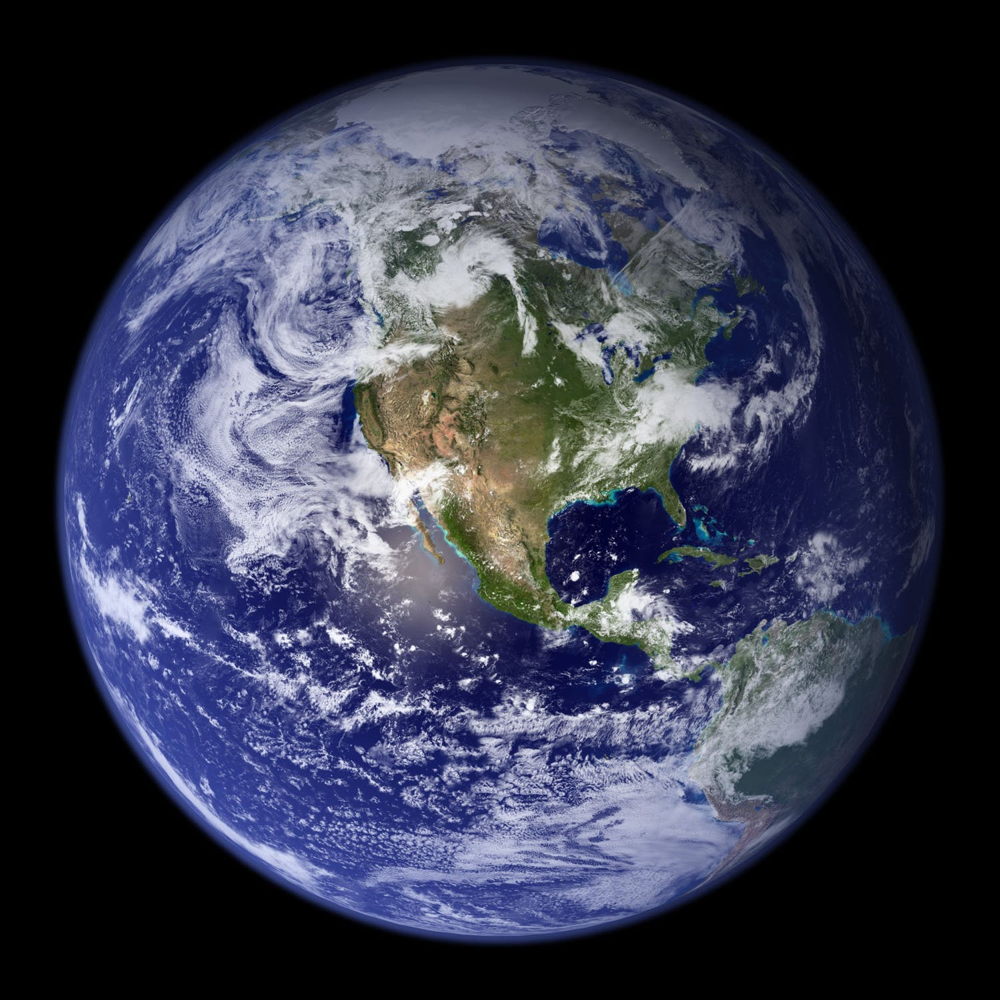

Earth
Our home planet is the only place we know of so far that's
inhabited by living things. It's also the only planet in our solar system with liquid water on the surface
Choose a planet to explore
 Jupiter
Jupiter
Jupiter is more than twice as massive than the other planets
of the solar system combined. The giant planet's Great Red spot is a centuries-old storm bigger than Earth
 Mars
Mars
Mars is dusty, cold, desert world with a very thin atmosphere. There
is a strong evidence. Mars was - billions of years ago - wetter and warmer, with a thicker atmosphere
 Saturn
Saturn
Adorned with a dazzling, complex system of icy rings, Saturn is
unique in our solar system. The other giant planets have rings, but none are as spectacular as saturns
 Neptune
Neptune
Neptune - the most distant major planet orbiting our Sun -
is dark, cold and whipped by supersonic winds. It was the first planet located through mathematical calculations
 Uranus
Uranus
Uranus- the second most distant planet from the Sun - rotates
at a nearly 90-degree angle from the plane of its orbit. This unique tilt makes Uranus appear to spin on its side
 Venus
Venus
Venus spins slowly in the opposite direction from most planets.
A thick atmosphere traps heat in a runaway greenhouse effect, making it the hottest planet in our solar system
 Mercury
Mercury
Mercury - the smallest planet in our solar system and closest to
the sun - is only slightly larger than Earth's Moon. Mercury is the fastest planet, zipping around the sun every 88 Earth days